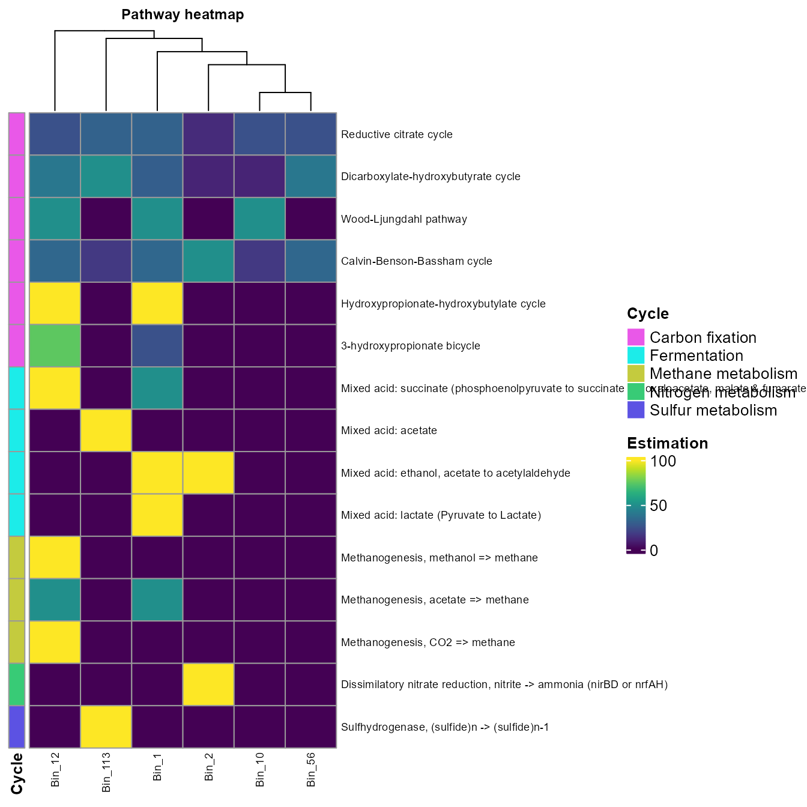
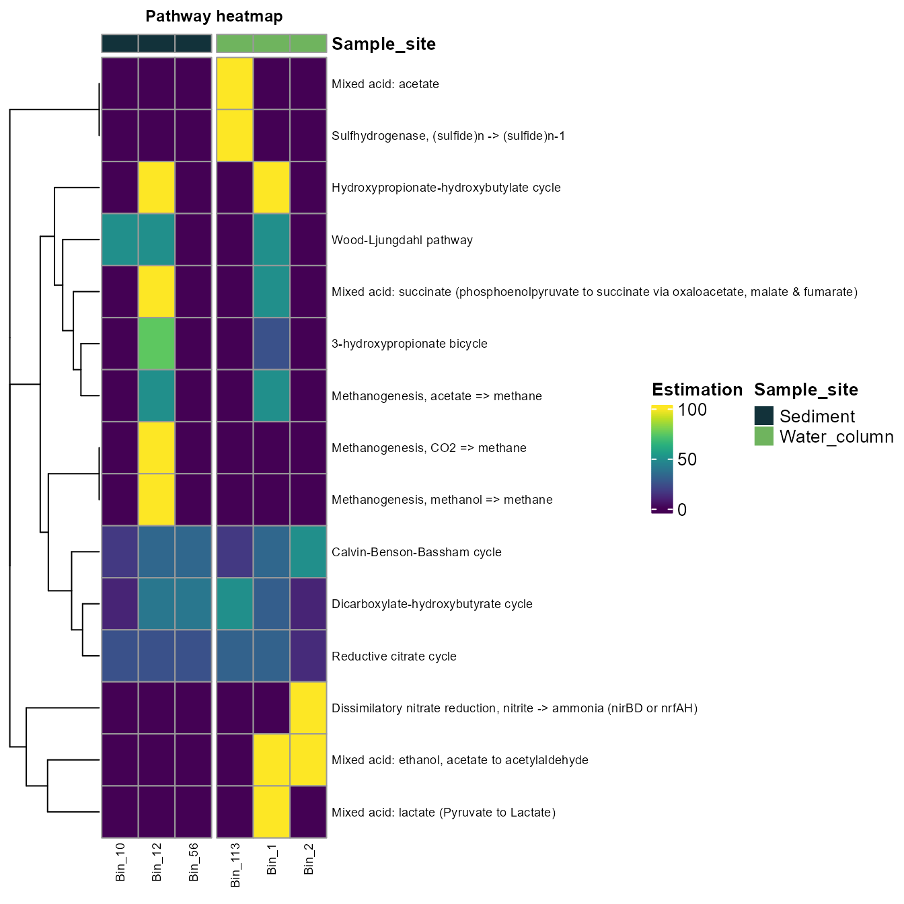
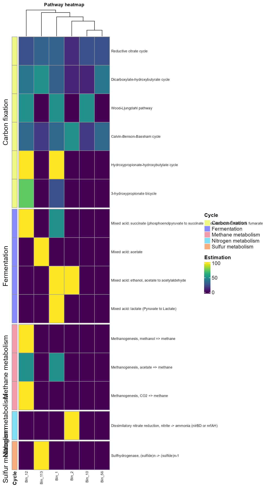

First, load the rbims package.
The second thing to do would be to read the metadata file and the KofamKOALA/KofamScan output. The metadata file is a tab-separated file containing the name of your bins and any extra information you would like to use for visualization.
Read metadata
The metadata file contains external information of each bin, like sample site or taxonomy. The name of the bins in the first column is mandatory.
The metadata table can be read in various formats (csv, tsv, txt, xlsx); you will need to use the corresponding function to read the type of file you have. In this case, the example table of rbims is in excel format; therefore, to read the metadata, we will use the function read_excel from the package readxl. You can download the metadata example file metadata and try.
library(readxl)
metadata<-read_excel("metadata.xlsx")
head(metadata)
#> # A tibble: 6 x 10
#> Bin_name Sample_site Clades Domain Phylum Class Order Family Genus Species
#> <chr> <chr> <chr> <chr> <chr> <chr> <chr> <chr> <chr> <chr>
#> 1 Bin_10 Sediment Clade_1 d__Bac… p__Pro… c__G… o__P… f__Sa… g__O… s__Ole…
#> 2 Bin_12 Sediment Clade_2 d__Bac… p__Pro… c__G… o__P… f__Ol… g__M… s__Mar…
#> 3 Bin_56 Sediment Clade_3 d__Bac… p__Pro… c__G… o__P… f__Sa… g__T… s__Tha…
#> 4 Bin_113 Water_column Clade_1 d__Bac… p__Pro… c__A… o__R… f__Rh… g__P… s__Par…
#> 5 Bin_1 Water_column Clade_2 d__Bac… p__Pro… c__G… o__E… f__Al… g__A… s__Alt…
#> 6 Bin_2 Water_column Clade_3 d__Bac… p__Pro… c__G… o__E… f__Al… g__A… s__Alt…If you followed the create KEGG profile tutorial, you could go directly to a case example of exploring and specific pathway.
Read the KEGG results
read_ko can read multiple text files obtained from KofamKOALA/KofamScan or KAAS, as long as they are all in the same path in your working directory. If you use both and there are different hits for a KO in both searches, it will take the hit from KofamKOALA/KofamScan.
ko_bin_table<-read_ko(data_kofam ="C:/Users/bins")Map to the KEGG database
Then map the KO to the rest of the features of the KEGG and rbims database.
ko_bin_mapp<-mapping_ko(ko_bin_table)Metabolism subsetting
To explore the metabolism table, rbims has three functions to subset the table:
Example of exploring a specific KEGG pathway
Let’s say that you are interested in the genes associated with the biofilm formation in Vibrio Cholerae.
- One option is to create a vector containing the name of the KEGG pathway associated with the biofilm formation in Vibrio Cholerae map05111.
Biofilm_Vibrio<-c("map05111")- Now, let’s extract the profile associated with that metabolic pathway.
library(tidyr)
Biofilm_Vibrio_subset<-ko_bin_mapp%>%
drop_na(Pathway) %>%
get_subset_pathway(Pathway, Biofilm_Vibrio)
head(Biofilm_Vibrio_subset)
#> # A tibble: 6 x 19
#> Module Module_description Pathway Pathway_descripti… Cycle Pathway_cycle
#> <chr> <chr> <chr> <chr> <chr> <chr>
#> 1 <NA> <NA> map05111 Biofilm formation… <NA> <NA>
#> 2 <NA> <NA> map05111 Biofilm formation… <NA> <NA>
#> 3 <NA> <NA> map05111 Biofilm formation… <NA> <NA>
#> 4 M00878 Phenylacetate degradat… map05111 Biofilm formation… <NA> <NA>
#> 5 <NA> <NA> map05111 Biofilm formation… Other Flagellar as…
#> 6 <NA> <NA> map05111 Biofilm formation… <NA> <NA>
#> # … with 13 more variables: Detail_cycle <chr>, Genes <chr>,
#> # Gene_description <chr>, Enzyme <chr>, KO <chr>, rbims_pathway <chr>,
#> # rbims_sub_pathway <chr>, Bin_10 <int>, Bin_12 <int>, Bin_56 <int>,
#> # Bin_113 <int>, Bin_1 <int>, Bin_2 <int>- Now, let’s create a plot of the presence and absence of the different KO associated with that pathway. Besides presence and absence, it is possible to plot abundance or the percentage of genes within certain pathways (See plot_bubble, calc argument).
plot_bubble(tibble_ko = Biofilm_Vibrio_subset,
x_axis = Bin_name,
y_axis = KO,
analysis="KEGG",
data_experiment = metadata,
calc="Binary",
color_character = Order,
range_size = c(1,10))
#> Warning: Removed 66 rows containing missing values (geom_point).
Order axis
Let’s say that you want to order by bin names.
- Create a vector containing the order.
order_taxa<-c("Bin_1", "Bin_2", "Bin_10", "Bin_113", "Bin_12", "Bin_56")- Now plot, using the order_bins argument.
plot_bubble(tibble_ko = Biofilm_Vibrio_subset,
data_experiment = metadata,
x_axis = Bin_name,
y_axis = Genes,
analysis="KEGG",
calc="Binary",
order_bins=order_taxa,
color_character=Genus,
range_size = c(5,6))
#> Warning: Removed 66 rows containing missing values (geom_point).
- In the same way, we created a vector with the KEGG pathway ID of interest; we can create a vector of specific KOs IDs or KEGG modules.
Here I will extract the information of some KO related to Carbon fixation metabolism.
Carbon_fixation<-c("K01007", "K00626", "K01902", "K01595", "K01903", "K00170", "K00169", "K00171", "K00172", "K00241")- Now, let’s extract the profile associated with that metabolic pathway.
library(tidyr)
Carbon_fixation_subset<-ko_bin_mapp%>%
drop_na(KO) %>%
get_subset_pathway(KO, Carbon_fixation)
head(Carbon_fixation_subset)
#> # A tibble: 6 x 19
#> Module Module_description Pathway Pathway_descripti… Cycle Pathway_cycle
#> <chr> <chr> <chr> <chr> <chr> <chr>
#> 1 M00173 Reductive citrate c… map00010 Glycolysis / Gluc… Carbo… Reductive citr…
#> 2 M00173 Reductive citrate c… map00010 Glycolysis / Gluc… Carbo… Dicarboxylate-…
#> 3 M00374 Dicarboxylate-hydro… map00010 Glycolysis / Gluc… Carbo… Reductive citr…
#> 4 M00374 Dicarboxylate-hydro… map00010 Glycolysis / Gluc… Carbo… Dicarboxylate-…
#> 5 M00173 Reductive citrate c… map00620 Pyruvate metaboli… Carbo… Reductive citr…
#> 6 M00173 Reductive citrate c… map00620 Pyruvate metaboli… Carbo… Dicarboxylate-…
#> # … with 13 more variables: Detail_cycle <chr>, Genes <chr>,
#> # Gene_description <chr>, Enzyme <chr>, KO <chr>, rbims_pathway <chr>,
#> # rbims_sub_pathway <chr>, Bin_10 <int>, Bin_12 <int>, Bin_56 <int>,
#> # Bin_113 <int>, Bin_1 <int>, Bin_2 <int>We can visualize the data with a heatmap.
plot_heatmap(tibble_ko=Carbon_fixation_subset,
y_axis=Genes,
analysis = "KEGG",
calc="Binary")
The calc argument
In this example, we will use energy metabolism to explore the rest of the functions.
- Create a vector with the metabolism of interest.
Other_energy<-c("Fermentation", "Carbon fixation", "Methane metabolism",
"Sulfur metabolism", "Nitrogen metabolism")- Use get_subset_pathway to subset the table using the cycles and the information of the energy metabolism.
library(tidyr)
Energy_metabolisms<-ko_bin_mapp %>%
drop_na(Cycle) %>%
get_subset_pathway(Cycle, Other_energy)
head(Energy_metabolisms)
#> # A tibble: 6 x 19
#> Module Module_description Pathway Pathway_descripti… Cycle Pathway_cycle
#> <chr> <chr> <chr> <chr> <chr> <chr>
#> 1 M00173 Reductive citrate c… map00010 Glycolysis / Gluc… Carbo… Reductive citr…
#> 2 M00173 Reductive citrate c… map00010 Glycolysis / Gluc… Carbo… Dicarboxylate-…
#> 3 M00374 Dicarboxylate-hydro… map00010 Glycolysis / Gluc… Carbo… Reductive citr…
#> 4 M00374 Dicarboxylate-hydro… map00010 Glycolysis / Gluc… Carbo… Dicarboxylate-…
#> 5 M00173 Reductive citrate c… map00620 Pyruvate metaboli… Carbo… Reductive citr…
#> 6 M00173 Reductive citrate c… map00620 Pyruvate metaboli… Carbo… Dicarboxylate-…
#> # … with 13 more variables: Detail_cycle <chr>, Genes <chr>,
#> # Gene_description <chr>, Enzyme <chr>, KO <chr>, rbims_pathway <chr>,
#> # rbims_sub_pathway <chr>, Bin_10 <int>, Bin_12 <int>, Bin_56 <int>,
#> # Bin_113 <int>, Bin_1 <int>, Bin_2 <int>- Plot the information using the plot_heatmap function. The argument order_y will order the rows according to a metabolic feature; in this case, we order the pathways_cycle according to cycle.
plot_heatmap(tibble_ko=Energy_metabolisms,
y_axis=Pathway_cycle,
order_y = Cycle,
analysis = "KEGG",
calc="Percentage")
- The argument order_x will order the rows according to a metadata feature; in this case, we order the bins according to sample site.
plot_heatmap(tibble_ko=Energy_metabolisms,
y_axis=Pathway_cycle,
data_experiment=metadata,
order_x = Sample_site,
analysis = "KEGG",
calc="Percentage")
- The split argument allows dividing the rows according to a specific value of the metadata.
plot_heatmap(tibble_ko=Energy_metabolisms,
y_axis=Pathway_cycle,
order_y = Cycle,
split_y = TRUE,
analysis = "KEGG",
calc="Percentage")
- The order_x argument allows you to add annotation info from the metadata for the columns.
plot_heatmap(tibble_ko=Energy_metabolisms,
data_experiment = metadata,
y_axis=Pathway_cycle,
order_y = Cycle,
order_x = Clades,
split_y = TRUE,
analysis = "KEGG",
calc="Percentage")